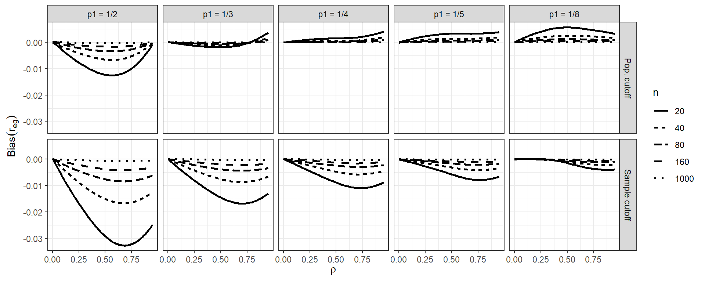
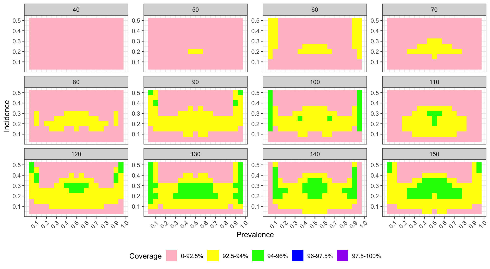
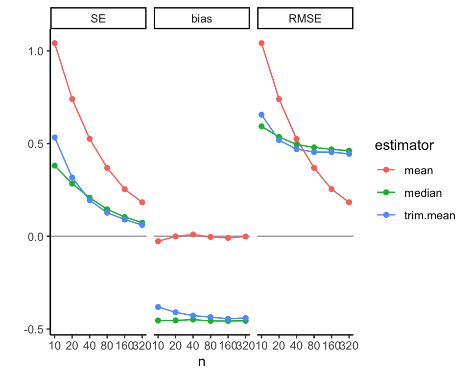

Chapter 15 Presentation of simulation results
Last chapter, we started to investigate how to present a multifactor experiment. In this chapter, we talk about some principles behind the choices one might make in generating final reports of a simulation. There are three primary approaches to the analysis and presentation of simulation results:
- Tabulation
- Visualization
- Modeling
There are generally two primary goals for your results:
- Understand the effects of all of the factors manipulated in the simulation.
- Develop evidence that addresses your research questions.
For your final write-up, you will not want to present everything. A wall of numbers and observations will serve to pummel the reader, rather than inform them; readers rarely enjoy being pummeled, and the solution is quite often to skim such material while feeling hurt and betayed. Instead, you should present selected results that clearly illustrate the main findings from the study and anything unusual/anomolous. This will typically be with a few well-chosen figues. Then, in the text of your write-up, you might include examples that make specific numerical comparisons. Do not include too many of theses, and be sure to say why the numerical comparisons you include are important. Finally, have supplementary materials that contain further detail such as additional figures and analysis, and complete simulation results.
If you want to be a moral person worthy of the awards of Heaven, you should also provide reproducible code so others could, if so desired, rerun the simulation and conduct the analysis themselves. This last part provides a great legitimacy bump to your work: even if no one touches your code, knowing that they could builds confidence. People naturally think, “if that researcher is so willing to let me see what they actually did, then they must be fairly confident it does not contain too many horrendous mistakes and it is probably right.”
We briefly walk through the three modes of engaging with one’s simulation results, with a few examples taken from the literature.
15.1 Tabulation
Traditionally, simulation study results are presented in big tables. We think this doesn’t really make the take-aways of a simulation readily apparent. Perhaps tables are fine if… - they involve only a few numbers, and a few targeted comparisons - it is important to report exact values for some quantities
Unfortunately, simulations usually produce lots of numbers, and involve making lots of comparisons. You are going to want to show, for example, the relative performance of alternative estimators, or the performance of your estimators under different conditions for the data-generating model. This means a lot of rows, and a lot of dimensions. Tables can do two dimensions; when you try to cram more than that into a table, no one is particularly well served.
Furthermore, in simulation, exact values for your bias/RMSE/type-I error, or whatever, are not usually of interest. And in fact, we rarely have them due to Monte Carlo simulation error. The tables provide a false sense of security, unless you include uncertainty, which clutters your table even further.
Tables and simulations do not particularly well mix. In particular, if you are ever tempted into putting your table in landscape mode to get it to fit on the page, think again. It is often more useful and insightful to present results in graphs (Gelman, Pasarica, & Dodhia, 2002).
So, onwards.
15.2 Visualization
Visualization should nearly always be the first step in analyzing simulation results.
This often requires creating a BUNCH of graphs to look at different aspects of the data.
Helpful tools/concepts:
- Boxplots are often useful for depicting range and central tendency across many combinations of parameter values.
- Use color, shape, and line type to encode different factors
- Small multiples (faceting) can then encode further factors (e.g., varying sample size)
We next present a series of visualizations taken from our published work, illustrating some different themes behind visualization that we believe are important.
15.2.1 Example 1: Biserial correlation estimation
Our first example shows the bias of a biserial correlation estimate from an extreme groups design. This simulation was a \(96 \times 2 \times 5 \times 5\) factorial design (true correlation for a range of values, cut-off type, cut-off percentile, and sample size). The correlation, with 96 levels, forms the \(x\)-axis, giving us nice performance curves. We use line type for the sample size, allowing us to easily see how bias collapses as sample size increases. Finally, the facet grid gives our final factors of cut-off type and cut-off percentile. All our factors, and nearly 5000 explored simulation scenarios, are visible in a single plot.
## `geom_smooth()` using formula = 'y ~ x'
Source: Pustejovsky, J. E. (2014). Converting from d to r to z when the design uses extreme groups, dichotomization, or experimental control. Psychological Methods, 19(1), 92-112.
Note that in our figure, we have smoothed the lines with respect to rho using geom_smooth().
This is a nice tool for taking some of the simulation jitter out of an analysis to show overall trends more directly.
15.2.2 Example 2: Variance estimation and Meta-regression
- Type-I error rates of small-sample corrected F-tests based on cluster-robust variance estimation in meta-regression
- Comparison of 5 different small-sample corrections
- Complex experimental design, varying
- sample size (\(m\))
- dimension of hypothesis (\(q\))
- covariates tested
- degree of model mis-specification

Source: Tipton, E., & Pustejovsky, J. E. (2015). Small-sample adjustments for tests of moderators and model fit using robust variance estimation in meta-regression. Journal of Educational and Behavioral Statistics, 40(6), 604-634.
15.2.3 Example: Heat maps of coverage
The visualization below shows the coverage of parametric bootstrap confidence intervals for momentary time sampling data In this simulation study the authors were comparing maximum likelihood estimators to posterior mode (penalized likelihood) estimators of prevalence. We have a 2-dimensional parameter space of prevalence (19 levels) by incidence (10 levels). We also have 15 levels of sample size.
One option here is to use a heat map, showing the combinations of prevelance and incidence as a grid for each sample size level. We break coverage into ranges of interest, with green being “good” (near 95%) and yellow being “close” (92.5% or above). For this to work, we need our MCSE to be small enough that our coverage is estimated precisely enough to show structure.
## Warning: `qplot()` was deprecated in ggplot2 3.4.0.
## This warning is displayed once every 8 hours.
## Call `lifecycle::last_lifecycle_warnings()` to
## see where this warning was generated.

To see this plot IRL, see Pustejovsky, J. E., & Swan, D. M. (2015). Four methods for analyzing partial interval recording data, with application to single-case research. Multivariate Behavioral Research, 50(3), 365-380.
15.3 Modeling
Simulations are designed experiments, often with a full factorial structure. We can therefore leverage classic means for analyzing such full factorial experiment. In particular, we in effect model how a performance measure varies as a function of the different experimental factors. We can use regression or other modeling to do this.
First, in the language of a full factor experiment, we might be interested in the “main effects” or “interaction effects.” A main effect is whether, averaging across the other factors in our experiment, a factor of interest systematically impacts our peformance measure. When we look at a main effect, the other factors help ensure our main effect is generalizable: if we see a trend when we average over the other varying aspects, then we can state that for a host of simulation contexts, grouped by levels of our main effect, we see a trend.
For example, consider the Bias of biserial correlation estimate from an extreme groups design example from above. Visually, we see that most factors appear to matter for bias, but we might want to get a sense of how much. In particular, does the the population vs sample cutoff option matter, on average, for bias?
options(scipen = 5)
mod = lm( bias ~ fixed + rho + I(rho^2) + p1 + n, data = r_F)
summary(mod, digits=2)##
## Call:
## lm(formula = bias ~ fixed + rho + I(rho^2) + p1 + n, data = r_F)
##
## Residuals:
## Min 1Q Median 3Q
## -0.0215935 -0.0013608 0.0003823 0.0015677
## Max
## 0.0081802
##
## Coefficients:
## Estimate Std. Error
## (Intercept) 0.00218473 0.00015107
## fixedSample cutoff -0.00363520 0.00009733
## rho -0.00942338 0.00069578
## I(rho^2) 0.00720857 0.00070868
## p1.L 0.00461700 0.00010882
## p1.Q -0.00160546 0.00010882
## p1.C 0.00081464 0.00010882
## p1^4 -0.00011190 0.00010882
## n.L 0.00362949 0.00010882
## n.Q -0.00103981 0.00010882
## n.C 0.00027941 0.00010882
## n^4 0.00001976 0.00010882
## t value Pr(>|t|)
## (Intercept) 14.462 < 2e-16 ***
## fixedSample cutoff -37.347 < 2e-16 ***
## rho -13.544 < 2e-16 ***
## I(rho^2) 10.172 < 2e-16 ***
## p1.L 42.426 < 2e-16 ***
## p1.Q -14.753 < 2e-16 ***
## p1.C 7.486 8.41e-14 ***
## p1^4 -1.028 0.3039
## n.L 33.352 < 2e-16 ***
## n.Q -9.555 < 2e-16 ***
## n.C 2.568 0.0103 *
## n^4 0.182 0.8559
## ---
## Signif. codes:
## 0 '***' 0.001 '**' 0.01 '*' 0.05 '.' 0.1 ' ' 1
##
## Residual standard error: 0.003372 on 4788 degrees of freedom
## Multiple R-squared: 0.5107, Adjusted R-squared: 0.5096
## F-statistic: 454.4 on 11 and 4788 DF, p-value: < 2.2e-16The above printout gives main effects for each factor, averaged across other factors. It is automatically generating linear, quadradic, cubic and fourth order contrasts for the ordered factors of p1 and n. We see that, across other contexts, the sample cutoff is around 0.004 lower than population.
We next discuss two additional tools:
- ANOVA can be useful for understanding major sources of variation in simulation results (e.g., identifying which factors have negligible/minor influence on the bias of an estimator).
- Smoothing (e.g., local linear regression) over continuous factors
## Df Sum Sq Mean Sq F value
## rho 1 0.002444 0.002444 1673.25
## p1 4 0.023588 0.005897 4036.41
## fixed 1 0.015858 0.015858 10854.52
## n 4 0.013760 0.003440 2354.60
## rho:p1 4 0.001722 0.000431 294.71
## rho:fixed 1 0.003440 0.003440 2354.69
## p1:fixed 4 0.001683 0.000421 287.98
## rho:n 4 0.002000 0.000500 342.31
## p1:n 16 0.019810 0.001238 847.51
## fixed:n 4 0.013359 0.003340 2285.97
## rho:p1:fixed 4 0.000473 0.000118 80.87
## rho:p1:n 16 0.001470 0.000092 62.91
## rho:fixed:n 4 0.002929 0.000732 501.23
## p1:fixed:n 16 0.001429 0.000089 61.12
## rho:p1:fixed:n 16 0.000429 0.000027 18.36
## Residuals 4700 0.006866 0.000001
## Pr(>F)
## rho <2e-16 ***
## p1 <2e-16 ***
## fixed <2e-16 ***
## n <2e-16 ***
## rho:p1 <2e-16 ***
## rho:fixed <2e-16 ***
## p1:fixed <2e-16 ***
## rho:n <2e-16 ***
## p1:n <2e-16 ***
## fixed:n <2e-16 ***
## rho:p1:fixed <2e-16 ***
## rho:p1:n <2e-16 ***
## rho:fixed:n <2e-16 ***
## p1:fixed:n <2e-16 ***
## rho:p1:fixed:n <2e-16 ***
## Residuals
## ---
## Signif. codes:
## 0 '***' 0.001 '**' 0.01 '*' 0.05 '.' 0.1 ' ' 1## eta.sq eta.sq.part
## rho 0.021971037 0.26254289
## p1 0.212004203 0.77453319
## fixed 0.142527898 0.69783705
## n 0.123670355 0.66710072
## rho:p1 0.015479114 0.20052330
## rho:fixed 0.030918819 0.33377652
## p1:fixed 0.015125570 0.19684488
## rho:n 0.017979185 0.22560369
## p1:n 0.178055588 0.74260975
## fixed:n 0.120065971 0.66049991
## rho:p1:fixed 0.004247472 0.06439275
## rho:p1:n 0.013216569 0.17638308
## rho:fixed:n 0.026326074 0.29902214
## p1:fixed:n 0.012839790 0.17222072
## rho:p1:fixed:n 0.003857877 0.05883389